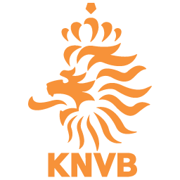
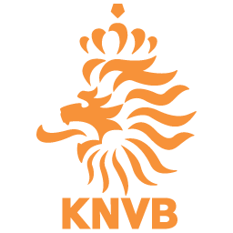

1st annual World Cup
Karsin came into the tournament on a 10 game win streak. That includes 2 games against Alejandro.
He ended up losing what would be the only match of the tournament that went to penalties against Alejandro. He then made quick work of Joe and Michael, winning by a combined score of 3 - 0.
In what seemed to be an incredible upset, with less than 10 minutes to go, Karsin conceded 2 goals to Gabe's England side to end up losing 2 - 1 in the losers finals.
 
